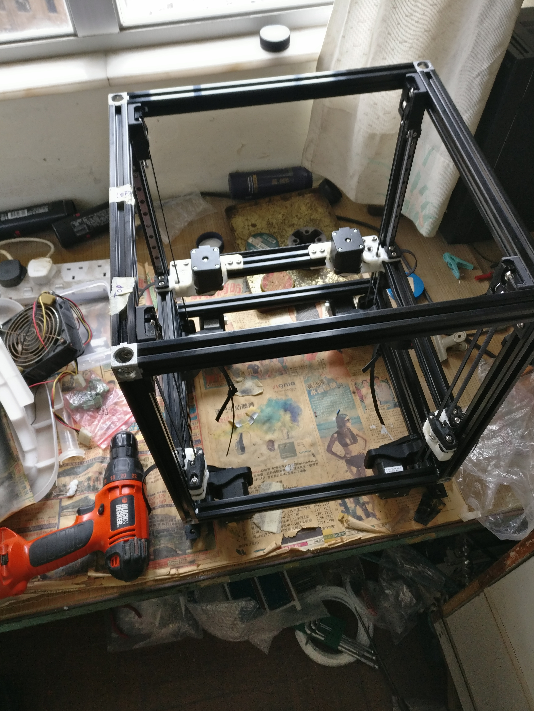

<div class="post-container flexflow-top-down"><div class="post-content"><div class="header flexflow-left-right" id="#voron-tryout"><div class="back_button"><a href="#proj_home"><i class="fas fa-backward"></i></a></div><div class="title"><div>voron printer</div></div></div><div class="meta"><div class="meta-content"><span><i class="fas fa-calendar-alt"></i> Mar 9, 2019</span></div><div class="meta-tags"><span><i class="fas fa-tags"></i> tag1 tag2 tag3</span></div><div class="meta-content"><span><i class="fas fa-clock"></i> 2 min</span></div></div><div class="caption_img"><p>voron printer frame</p></div><h3>Purpose</h3><p>to build a opensource 3d printer named voron</p><h3>Demo</h3><div class="video-container"><iframe width="853" height="480" src="https://www.youtube.com/embed/YNCB23V38x0" frameborder="0" allow="accelerometer; autoplay; encrypted-media; gyroscope; picture-in-picture" allowfullscreen="allowfullscreen"></iframe></div><h3>ref/repo:</h3><a href="https://www.reddit.com/r/voroncorexy/" target="_blank">https://www.reddit.com/r/voroncorexy/<i class="fas fa-external-link-alt"></i></a><a class="back_to_proj_home" href="#proj_home" style="width: 100%;"><i class="fa fa-arrow-left"></i> back to project home</a></div></div>